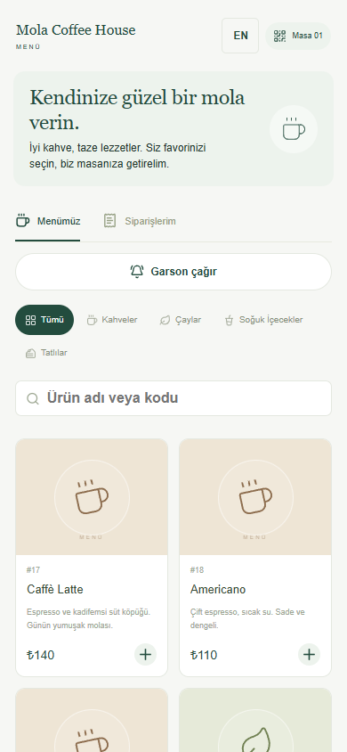
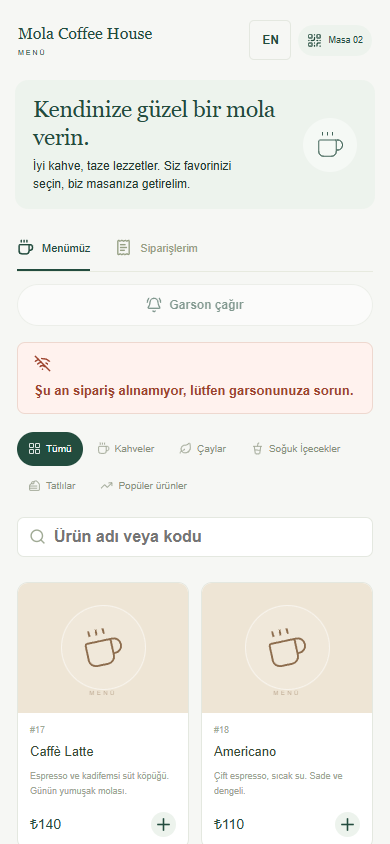
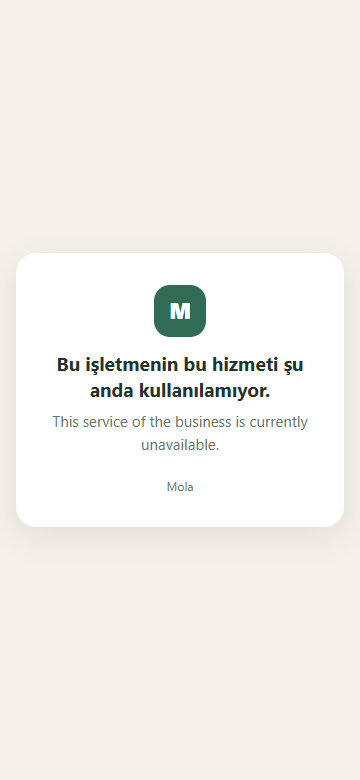
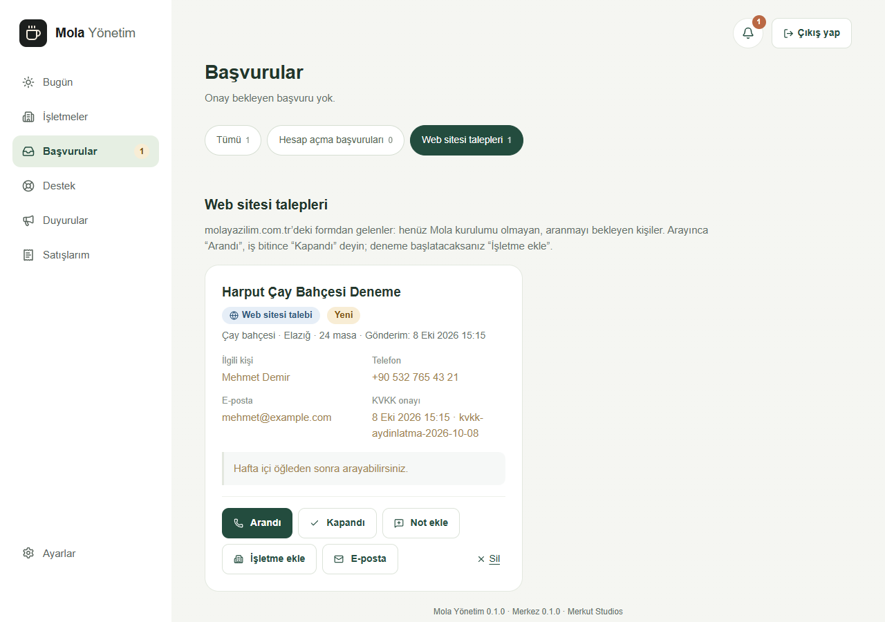

1Bu dosya hakkında
Mola, Elazığ'daki kafe, restoran, pastane ve çay bahçeleri için yazılmış bir adisyon ve QR menü programıdır. Bu dosya, Mola için gereken bütün hukuki metinleri (aydınlatma metinleri, gizlilik ve çerez politikaları, lisans, abonelik ve veri işleme sözleşmeleri) yazabilmeniz için sistemin nasıl çalıştığını ve hangi kişisel verinin nerede durduğunu anlatır.
Nasıl hazırlandı
- Kaynak: programın kaynak kodu, geliştirici rehberi (
docs/GELISTIRICI_REHBERI.md), karar ve test belgeleri. Durum: 8 Ekim 2026, Mola 0.1.0. - Her saklama süresi, şifreleme ve veri alanı kodda tek tek arandı. Kodda bulunamayan ya da gerçek ortamda henüz denenmemiş bilgiler Doğrulanmadı rozetiyle işaretlidir.
- Sahibin verdiği iş kararları Karar, henüz avukat onayı almamış metinler Taslak rozetiyle gösterilir.
- Teknik terimlerin kısa açıklaması Ek D'deki sözlüktedir.
Bugünkü durum
- Satış henüz başlamadı. Program pilot kafelerde denenmeye hazırlanıyor (önce 2–3 kafe, 30 günlük deneme).
- Satıcı şimdilik şahıstır. Merkut Studios bir marka adıdır; satışlar başlayınca şirket kurulması planlanıyor (bölüm 11.12).
- Mola Merkez (satıcının sunucusu) bugün satıcının kendi Windows bilgisayarında çalışıyor. İnternette bir sanal sunucuya (VDS) taşınması hazırlandı ama sunucu henüz satın alınmadı. Hedef, veri merkezi Türkiye'de (İstanbul) olan bir sağlayıcıdır. Doğrulanmadı Sağlayıcı ve veri merkezinin yeri henüz kesin değil.
- Alan adı
molayazilim.com.tralındı (kayıt firması Metunic). Web sitesi hazır, yayında değil. Sitedeki KVKK, gizlilik ve çerez sayfaları taslaktır (Ek B). - Mola Lisans Sözleşmesi'nin taslağı programda zorunlu onay olarak kullanılıyor (Ek A). Avukat onayı bekliyor.
Tek sayfada özet
- İşletmenin bütün verisi (satış, ödeme, menü, çalışanlar, misafir ve rezervasyon bilgileri) işletmenin kendi bilgisayarında, şifreli olarak durur. Satış verisi Merkut Studios'a gelmez.
- Mola Merkez yalnız lisans, etkinleştirme, destek, güncelleme ve bakım bilgisini tutar. İşletmenin isteğe bağlı şifreli yedek kopyasını da saklar; anahtar işletmede kaldığı için içeriğini açamaz.
- Misafir masadaki QR kodunu internetten (kendi mobil verisiyle) açtığında, menü ve sipariş trafiği Mola Merkez'den geçer. Merkez bu trafiği açık hâlde görür ama saklamaz ve günlüğe yazmaz.
- 8 Ekim'den beri Merkez menünün herkese açık bir kopyasını (ürün adları, açıklamalar, fiyatlar, kampanyalar, fotoğraflar, masa adları) şifreli olarak tutar; işletmenin bilgisayarı kapalıyken misafir menüyü bu kopyadan görür, sipariş veremez. Kopyada satış, sipariş, misafir ya da çalışan bilgisi yoktur.
- Saklama süreleri (8 Ekim, sahibin kararı, değiştirilebilir): Merkez işlem kayıtlarındaki IP adresleri 1 yıl, kapanan destek görüşmeleri 2 yıl, reddedilen başvurular 1 yıl, işletmenin engellediği misafir tarayıcısı 90 gün (bölüm 5).
- İşletme sahibinin telefonuna giden raporlar ve uzaktan yönetim uçtan uca şifrelidir; Merkez yalnız şifreli metni taşır.
- Taraflardan hangisinin hangi veri için veri sorumlusu ya da veri işleyen olduğunun değerlendirilmesi (bölüm 2).
- Aydınlatma metinleri: misafirler, çalışanlar, web sitesi ziyaretçileri ve form dolduranlar, işletme sahipleri (başvuru). Gerekiyorsa açık rıza metinleri.
- Gizlilik politikası ve çerez politikası (site ve program).
- Mola Lisans Sözleşmesi taslağının gözden geçirilmesi (Ek A, bölüm 11.5'te tespit ettiğimiz uyumsuzluklar).
- Abonelik ve hizmet sözleşmesi, veri işleme sözleşmesi (satıcı ile işletme arasında), uzaktan destek onay metni, web formu metni.
- VERBİS kaydı, "Mola" marka araştırması ve şirket kuruluşunun etkileri hakkında görüş.
- İlk pilot kafeden önce: işletme ve misafir aydınlatma metinleri, lisans sözleşmesinin son hâli, abonelik sözleşmesi.
- VDS ve web sitesi yayına girmeden önce: site yasal sayfaları (unvan, adres, vergi no ve sunucu sağlayıcı yer tutucuları dolmalı).
- Masa QR kodlarının toplu basımından önce: misafir aydınlatma metninin son hâli (8 Ekim'den beri menünün altında "Gizlilik" bağlantısıyla açılan bir taslak sayfa var, bölüm 10.3; köşeli parantezli yerler sizin doldurmanız içindir).
2Taraflar ve roller
Aşağıdaki tablo sistemdeki kişi ve kurumları, sistemin hangi parçasını kullandıklarını ve hangi veriye dokunduklarını gösterir. Son sütun bizim teknik gözlemimizdir; hukuki nitelendirme sizindir.
| Taraf | Kim | Sistemdeki yeri ve dokunduğu veri | Teknik gözlem, sizin değerlendirmeniz için |
|---|---|---|---|
| Merkut Studios (satıcı) | Programın sahibi ve satıcısı. Bugün şahıs (Emirhan İspir, bilgisayar programcılığı öğrencisi, Elazığ). Satışlar başlayınca şirket kurulacak. | Mola Merkez'i ve Mola Yönetim panelini işletir. İşletme kayıtlarını, fatura bilgilerini, destek taleplerini, web sitesi taleplerini ve kendi işlem kayıtlarını tutar. | Kendi müşterilerinin (işletme yetkilileri) ve web sitesi taleplerinin verisi için veri sorumlusu gibi görünüyor. Şifreli yedek, internetten menü ve uzaktan destek için ise işletme adına işleme yapıyor olabilir. |
| İşletme (kafe, restoran, pastane, çay bahçesi) | Mola'yı lisansla kullanan tüzel ya da gerçek kişi tacir. | Programı kendi kasa bilgisayarında çalıştırır. Misafir, rezervasyon müşterisi ve çalışan verisinin tamamı orada durur. | Misafir ve çalışan verisinin veri sorumlusu gibi görünüyor. Mola'nın mimarisi bu varsayımla kuruldu (sahibin 3 Ekim kararı). |
| İşletme sahibi / yetkili | İşletmeyi temsil eden gerçek kişi. | Başvuru formunu doldurur (ad soyad, telefon, e-posta, fatura bilgileri). Programda "İşletme sahibi" hesabıdır. | Satıcı açısından ilgili kişi (müşteri yetkilisi); işletme açısından program kullanıcısı. |
| Çalışanlar | Müdür, kasiyer, garson, mutfak. | Programda kendi hesaplarıyla çalışır; adları, vardiyaları, bahşiş payları, yaptıkları işlemler kaydedilir. Hepsi işletmenin bilgisayarındadır. | İşletmenin çalışanı. Satıcıya çalışan verisi gitmez. |
| Misafirler | Masadaki QR kodla menüyü açan, sipariş veren kişiler. | Hesap açmaz, ad sormayız. Tarayıcıya bir kimlik çerezi yazılır; siparişleri ve notları işletmede durur. İnternetten açılan menüde trafik Mola Merkez'den geçer. | İşletmenin müşterisi. Merkez'in trafiği geçirmesi işletme adına bir işleme olabilir (bölüm 3.3). |
| Rezervasyon müşterileri | Masa ayırtan kişiler. | Personel adını, isteğe bağlı telefonunu ve notunu yazar. İşletmede kalır. | İşletmenin müşterisi. |
| Paket servis platformu müşterileri | Yemeksepeti, Getir, Trendyol, Migros siparişleri. | Bağlantı altyapısı hazır, gerçek bağlantı yok (platformların iş ortaklığı onayı bekleniyor). Bağlanınca müşteri adı ve not işletmeye gelir, uzun dönem kayda geçmez. | İleride: platform ile işletme arasındaki ilişki. Bugün canlı veri yok. |
| Mola Merkez | Satıcının sunucusu. Bugün satıcının Windows bilgisayarı; hedef İstanbul'da bir VDS. | Lisans imzalar, destek taleplerini ve şifreli yedekleri tutar, misafir trafiğini ve uzaktan erişimi aktarır. | Sunucu sağlayıcısı (VDS firması) altyapı sağlayıcı olarak alt işleyen sayılabilir; henüz seçilmedi. |
| Mola ekibi (destek) | Bugün yalnız satıcının kendisi. | Mola Yönetim'den destek taleplerini yanıtlar. İşletme sahibi izin verirse kafenin ekranlarına sınırlı yetkiyle bağlanır (bölüm 3.4). | Uzaktan destek sırasında işletmenin verisine sınırlı erişim. |
| Web sitesi ziyaretçileri | molayazilim.com.tr'yi açan, iletişim formunu dolduran kişiler. | Sitede çerez ve analiz aracı yoktur. Form bilgileri Mola Merkez'e kaydedilir. | Satıcının potansiyel müşterisi. |
| Üçüncü taraf hizmetler | VDS sağlayıcısı, alan adı firması, e-posta sağlayıcısı, sertifika kuruluşu. | Ayrıntı bölüm 8'de. E-posta, işletmenin ve satıcının kendi seçtiği hesaptan gider (varsayılan ayar Gmail). | Yurt dışı aktarım sorusu e-posta için doğabilir (bölüm 8). |
- Satıcı, işletmenin şifreli yedeğini sakladığında (içeriği açamadığı hâlde) veri işleyen sayılır mı?
- İnternetten açılan QR menüde Merkez misafir trafiğini açık hâlde görüp hiç saklamadan aktarıyor. Bu, işletme adına işleme midir; veri işleme sözleşmesi gerekir mi?
- Uzaktan destek oturumunda Mola ekibi işletmenin menü, masa ve ayar ekranlarını görür (satış ve kişisel veri ekranları kapalıdır). Bu erişim nasıl nitelendirilmeli?
- Destek taleplerine işletmenin eklediği ekran görüntüleri ve mesajlar kişisel veri içerebilir. Satıcı burada veri sorumlusu mu, veri işleyen mi?
3Sistem nasıl çalışır
Mola iki sunucudan oluşur: her işletmenin kendi bilgisayarında çalışan kafe sunucusu ve satıcının işlettiği Mola Merkez. Bağlantıyı her zaman kafe başlatır; Merkez kafeye hiç bağlanmaz, yalnız yanıt verir. Bu yüzden kafede modem ayarı ya da port açmak gerekmez.
3.1 İşletmenin bilgisayarı
- Mola, işletmenin kasa bilgisayarına (Windows; Mac ve Linux paketleri de var ama gerçek cihazda denenmedi) kurulur. Program arka planda bir sunucu çalıştırır; tabletler ve telefonlar ona kafenin Wi-Fi'si üzerinden tarayıcıyla ya da ince Android uygulamasıyla bağlanır.
- Bütün veri tek bir SQLite veritabanı dosyasındadır. Her satırın içeriği AES-256-GCM ile şifrelenir (mühürlenir); her işletmenin kendi rastgele veri anahtarı vardır. Ana anahtar diskte düz durmaz: Windows'un kullanıcı kilidi (DPAPI) ve işletme sahibine kâğıtta verilen 24 haneli kurtarma kodu ile iki ayrı kez kilitlenir. Kod hiçbir yerde saklanmaz; satıcı da bilmez.
- Önemli sınır: kafe içindeki ağ trafiği (tablet ile kasa bilgisayarı arası) düz HTTP'dir, yani yerel ağda şifresizdir. Bu yüzden kurtarma kodu gibi bilgiler yalnız kasa bilgisayarının kendi ekranında gösterilir. İnternetten geçen her şey HTTPS'tir.
- Hesap fişinin altında "Bilgi fişidir. Mali değeri yoktur." yazar. Yasal fiş yazar kasadan kesilir; Mola bugün yazar kasaya (ÖKC) bağlanmaz (bölüm 12.2).
3.2 Mola Merkez'in sakladıkları
Kafe, Merkez'e açılışta ve 10 dakikada bir "kalp atışı" gönderir. Merkez bu gönderinin alanlarını katı bir listeyle denetler ve fazlasını reddeder. Sipariş, ödeme, tutar, ürün adı, çalışan adı ya da şifresi ve müşteri adı bu listede yoktur; bunu otomatik bir test de denetler.
| Merkez'deki bilgi | İçerik | Kişisel veri | Saklama |
|---|---|---|---|
| İşletme kaydı ve lisans | İşletme adı ve türü, plan, bitiş tarihi, hizmet paketi, askı/dondurma durumu, imzalı lisanslar, lisans sözleşmesi kabulü (sürüm, zaman, isteğe bağlı yazılan yetkili adı). | Kısmen (ad) | İşletme kaydı silinene kadar. |
| Başvuru ve fatura bilgileri | Ticari unvan, vergi dairesi, VKN ya da TCKN, il, ilçe, açık adres, cep telefonu, e-posta, yetkili adı soyadı, aydınlatma onayı. Vergi no, telefon ve e-posta için yalnız anahtarlı özetlerden oluşan ayrı bir dizin (tekrar kayıtları bulmak için). | Evet | İşletme kaydı silinene kadar. Reddedilen başvurular karardan 1 yıl sonra kendiliğinden silinir Karar (8 Ekim). Yarım kalan (hiç gönderilmemiş) başvuru Merkez'e hiç gelmez. Silinen işletmenin vergi no özeti tekrar başvuruyu fark etmek için kalır. |
| Durum özeti (kalp atışı) | Masa, çalışan ve ürün sayıları, son kullanım zamanı, sahibin ilk giriş zamanı, program sürümü, yedek durumu (zaman, başarı; klasör yolu yok), bilgisayarın kimliğinin tek yönlü özeti (HMAC; kimliğin kendisi gitmez), güncelleme durumu. | Hayır (işletme bilgisi) | Son durum tutulur. |
| Hata kayıtları | Sunucu hatasının koddaki yeri, istek yolunun kalıbı (ör. /api/x/:id), durum kodu, rol. IP adresi, şifre, sipariş içeriği, tutar yok. | Hayır | İşletme başına en çok 500 kayıt, 30 gün. Kafede kendi kopyası 7 gün. |
| Destek talepleri | İşletme sahibinin yazdığı mesajlar (serbest metin, mesaj başına 4.000 karakter), Mola ekibinin yanıtları, dondurma talebinin gerekçesi. | Olabilir | Kapanan görüşme son mesajdan 2 yıl sonra kendiliğinden silinir (kafedeki kopyası da) Karar (8 Ekim); açık görüşme işletme kaydı silinene kadar. Kafede son 300 talep. |
| Destek ekleri | Fotoğraf (JPG, PNG, WEBP, HEIC) ve PDF; dosya başına 10 MB, mesaj başına 5. Fotoğraflar yeniden yazılır: en çok 2.000 piksel, konum ve cihaz bilgisi (EXIF/GPS) dahil hiçbir üst veri kalmaz. | Olabilir | 14 gün sonra kendiliğinden silinir; mesaja bağlanmamış yükleme 1 gün. Dosyalar Merkez yedeğine girmez. |
| Duyurular ve okundu bilgisi | Satıcının duyuruları; işletme başına ilk okuma zamanı ve okuyanın rolü (sahip ya da müdür; kişi adı yok), "Okudum" zamanı. | Hayır | En yeni 200 duyuru. |
| Menünün kopyası (8 Ekim) | Misafir menüsünün herkese açık içeriği: işletme adı, logo, tema, kategoriler, ürün adları, açıklamaları, içerikleri, fiyatları, seçenekleri, "tükendi" bilgisi, kampanyalar ve zaman pencereleri, kampanyalarda satılan adet (kota için), masa adları ve masa QR kodlarının yalnız tek yönlü özeti, ürün fotoğrafları. Satış, sipariş, misafir, çalışan bilgisi yoktur. Şifreli (mühürlü) saklanır. | Hayır (kamuya açık içerik) | Kafe her değişiklikte günceller; eski fotoğraf hemen silinir. İşletme kaydı silinince hemen silinir. Menü metni Merkez'in şifreli gece yedeğine de girer; fotoğraflar girmez. |
| Sosyal medya bağlantıları | Misafir menüsünde herkese açık gösterilen bağlantılar ve işletmenin kısa kodu (QR yönlendirmesi için). | Hayır (kamuya açık) | İşletme kaydıyla. |
| Web sitesi talepleri | İşletme adı, ad soyad, telefon, e-posta (isteğe bağlı), şehir, masa sayısı (isteğe bağlı), işletme türü, mesaj, KVKK onayının zamanı ve metin sürümü, Mola ekibinin notları. IP adresi kaydedilmez (yalnız bellekte hız sınırı için sayılır). | Evet | Talep kapatıldıktan 2 yıl sonra kendiliğinden; "Sil" ile hemen. |
| Şifreli sunucu yedekleri (ücretli hizmet) | İşletme yedeğinin şifreli dosyaları. Merkez yalnız zaman, boyut, SHA-256 özeti ve sürümü görür. | İçerik okunamaz | Son 3 iş günü + son 2 hafta (işletme başına değiştirilebilir); kapanmış yılların şifreli paketleri işletme silinene kadar; işletme silinince hemen. |
| Program dosyası denetimi | Değiştirilmiş ya da eksik program dosyalarının adları. İçerik ve veri gönderilmez. | Hayır | Son durum. |
| Uzaktan erişim kayıtları | Uzaktan destek izni ve oturumları (başlangıç, bitiş, yapılan değişikliklerin listesi); sahibin uzaktan yönetim oturumlarının başlangıç ve bitişi (zaman ve neden; cihaz adı ve IP yok). Eşleşmiş telefonlar için kimlik ve erişim anahtarının özeti. | Sınırlı | İşlem kayıtlarıyla. |
| İşlem kayıtları (Merkez) | Mola Yönetim'deki her işlem ve güvenlik olayı: kim, ne, hangi işletme, eski ve yeni değer. Merkez'in kendi bilgisayarı dışından gelen isteklerde IP adresi de yazılır (web sitesi formunun ziyaretçisininki hiç yazılmaz). Şifre, kod, anahtar, fatura bilgisi değeri ve satış verisi hiç yazılmaz. | Evet (IP, işletme adı) | Varsayılan 10 yıl (en az 2 yıl, ayarlanır). IP adresleri 1 yıl sonra silinir Karar (8 Ekim); kayıtların değiştirilemezlik denetimi bozulmaz (bölüm 7). |
| Satışlarım (satıcının kendi satışları) | Hangi işletmeye hangi paket ne kadara satıldı, tahsilat, yöntem, fatura no, KDV. | İşletme bilgisi | Silinmez; "İptal" yalnız toplamdan çıkarır. İşletme silinse de kalır. |
| Mola Yönetim hesabı | Satıcının kullanıcı adı, şifre özeti (scrypt), iki adımlı giriş sırrı, yedek kodlar, e-posta ve SMTP ayarı. | Satıcının kendisi | Hesap durdukça. |
| Merkez'in kendi yedeği | Yukarıdakilerin şifreli gece yedeği (destek ekleri, menü fotoğrafları ve işletmelerin sunucu yedekleri hariç). | Evet (şifreli) | En yeni 14 yedek; ikinci yerde en yeni 7. |
3.3 Merkez'den geçen ama saklanmayanlar
İnternetten açılan QR menü
Masadaki QR kodu https://menu.molayazilim.com.tr/q/<işletme kodu>/<masa kodu> adresini taşır (menüye ayrılmış adres; Mola Yönetim'in ve web sitesinin adreslerinden ayrı, 11 Ekim 2026). Misafir bunu kendi mobil verisiyle ya da herhangi bir Wi-Fi'den açabilir. İstek Mola Merkez'e gelir; Merkez onu, kafenin kendi açtığı tek bir şifreli bağlantının (tünel) içinden kafeye iletir ve cevabı misafire döner.
- Merkez'in gördüğü: menü, sepet, sipariş, sipariş notu, garson çağrısı, hesap isteği ve ürün fotoğrafları. Merkez TLS'i kendisi sonlandırdığı için bu trafiği açık hâlde görür.
- Merkez'in sakladığı: hiçbiri. İçerik ve istek yolu veritabanına ya da günlüğe yazılmaz. Yalnız kafe başına istek ve hata sayıları bellekte tutulur (Merkez yeniden başlayınca sıfırlanır). Herkeste aynı olan program dosyaları bellekte önbellekte durur. Menünün kendisi ve ürün fotoğrafları ise 8 Ekim'den beri ayrıca kopya olarak saklanır (bölüm 3.2); misafire ait hiçbir şey içermez.
- Misafirin IP adresi: Merkez'de yalnız hız sınırı için bellekte sayılır ve kafeye aynı amaçla imzalı olarak iletilir; saklanmaz. Kafede de yalnız bellekte sayılır.
- Çerez:
mola_browserçerezi (30 gün) yalnız o işletmenin menü adresine (/q/<kod>/) bağlanır; aynı sitedeki iki işletme aynı çerezi paylaşmaz. - Askıdaki işletme: lisans bitmiş, askıda, dondurulmuş ya da kafe 14 gündür bağlanmamışsa Merkez kafeye hiç sormadan "Bu işletmenin dijital menüsü şu anda kullanılamıyor." sayfasını gösterir.
- Yerel ölçüm: Merkez'in eklediği gecikme tek istekte 1 milisaniyenin altında; 50 kafe × 30 misafirlik yükte hata yok. Gerçek VDS ve gerçek telefonla Doğrulanmadı
Proje notlarımızda misafir aydınlatma metnine şu cümlenin eklenmesi önerildi: "QR menü internet üzerinden Mola Merkez aracılığıyla sunulur; Mola içeriği saklamaz." Bu cümlenin yeterli olup olmadığını ve hangi metinde (işletmenin aydınlatma metni mi, satıcının metni mi) yer alması gerektiğini değerlendirmenizi rica ederiz.
Şifreli aktarılanlar
- Raporlarım ve sahibin uzaktan yönetimi: kafe bilgisayarı ile sahibin eşleşmiş cihazı arasında uçtan uca şifreli (bölüm 3.5). Merkez anahtarlara sahip değildir.
- Telefon posta kutusu: kafe kapalıyken telefonun görebilmesi için kafe 15 dakikada bir, gün sonunda ve kapanırken telefonun anahtarıyla şifreli bir rapor özeti bırakır. Merkez açamaz; telefon alınca ya da en geç 7 günde silinir, yedeğe girmez, telefon başına tek kutu, en çok 256 KB.
3.4 Uzaktan destek (işletme sahibinin izniyle)
- Varsayılan kapalıdır. Yalnız işletme sahibi, kendi hesabından ve şifresini yeniden yazarak "Mola ekibi bağlanabilsin" iznini açar. Süre sınırı yoktur; sahip her an kapatabilir, kapatınca açık oturum o anda biter.
- Mola ekibi Mola Yönetim'den "Kafeye bağlan" der; işletmenin ekranları satıcının tarayıcısında açılır. İstekler Merkez üzerinden kafeye gider. Bu kanal uçtan uca şifreli değildir: Mola ekibi açtığı ekranları görür (taşıma HTTPS'tir).
- "Mola destek" rolünün yapabildikleri sunucuda tek bir izin listesiyle sınırlıdır: menü, kampanyalar, masa ve QR, yazıcı ve ses, para dışı ayarlar, tanılama. Satış ve raporlar, ödeme ve hesaplar, kasa, giderler, stok maliyeti ve kârlılık, çalışan şifreleri ve oturumları, yedek ve kurtarma, entegrasyon anahtarları, rezervasyon ve misafir telefonları, bildirimler kapalıdır (sunucu 403 hatası verir). Bunu otomatik testler denetler.
- Oturum açıkken bütün personel ekranlarında "Mola ekibi bağlı" bandı görünür. Her değişiklik işletmenin kaydına düz Türkçe yazılır (ör. "Mola destek: Ürün değişti: Latte · fiyat ₺90 → ₺95"), oturum başında ve sonunda sahibe bildirim gider. 30 dakika işlem yoksa ya da 8 saatte oturum biter.
3.5 Sahibin uzaktan yönetimi ve Raporlarım
- Telefon eşleştirme: işletme sahibi kafedeki bilgisayarda "Telefonu eşleştir"e basar, cihaza bir ad verir ve şifresini yeniden yazar; ekranda tek kullanımlık bir QR çıkar (10 dakika, tek telefon, en çok 3 cihaz). Telefon kendi şifreleme anahtarını üretir; özel anahtar telefondan çıkmaz.
- Raporlarım: sahip telefonundan kasa günü toplamını, nakit/kart dağılımını, en çok satanları, açık hesapları ve son kasa kapanışını görür. İçerik kafede üretilir ve yalnız o telefon için şifrelenir.
- Kafeyi yönet: varsayılan kapalı; yalnız kafedeki bilgisayardan, şifre ve telefondaki doğrulama koduyla (TOTP) açılır. Her uzak girişte yine şifre ve kod istenir; sahibe bildirim gider. Uzaktan yapılamayanlar: yedekten geri yükleme, kurtarma kodu, cihaz eşleştirme, uzaktan erişim izinlerini açmak, güncelleme kurmak. Kafede tutulan oturum kaydı: cihaz adı, başlangıç, bitiş, neden (IP tutulmaz).
3.6 E-posta
- İşletmenin dönem raporları: gün, hafta, ay, yıl sonu raporları kafe bilgisayarından, işletmenin kendi e-posta hesabıyla (varsayılan ayar Gmail ve uygulama şifresi) en çok 5 alıcıya gönderilir. Merkez'e uğramaz. İçerik: satış ve para toplamları, en çok satanlar, kasa kapanışı, KDV dökümü, hafta/ay/yıl raporlarında personel saatleri. Müşteri adı, telefonu, rezervasyon ve not yoktur. Ekte yazdırılabilir A4 rapor (PDF).
- Satıcının e-postaları: Mola Yönetim, satıcının kendi SMTP hesabından (varsayılan Gmail) satıcıya olay bildirimleri, isteğe bağlı duyuru kopyalarını işletmelerin fatura e-postasına ve yönetici şifre sıfırlama kodunu gönderir. Web sitesi talebi bildiriminde kişisel veri yoktur (yalnız işletme türü ve şehir).
- E-posta için üçüncü taraf bir e-posta servisi (API) kullanılmaz; program kendi SMTP istemcisini kullanır. Hangi e-posta sağlayıcısının seçileceği satıcının ve işletmenin kararıdır (bölüm 8).
3.7 Lisans ve bağlantı kuralları
- Lisansı Merkez dijital olarak imzalar (Ed25519); kafe imzayı programa gömülü açık anahtarla doğrular. Değiştirilmiş lisans çalışmaz.
- İnternet kesilirse son lisans en çok 14 gün geçerlidir (7. günden uyarı). 14. günde misafir menüsü ve yeni sipariş kapanır; açık hesaplar kapatılabilir, raporlar görülebilir, veri silinmez. Bağlantı gelince kendiliğinden açılır Karar.
- Bir lisans, bir bilgisayar: aynı kurulum başka bir bilgisayardan bağlanırsa yeni bilgisayar etkin olur, eskisi "Bu lisans başka bir bilgisayarda kullanılıyor" der ve yeni siparişi kapatır; satıcıya uyarı gider. Bunun için bilgisayarın donanım kimliği değil, yalnız anahtarlı özeti gönderilir.
- Askı, süre bitimi, dondurma: misafir menüsü ve yeni sipariş kapanır; açık hesaplar kapatılabilir, raporlar görülebilir, destek açık kalır, veri silinmez. Dondurma yalnız yıllık abonelikte, 1–60 gün, 12 ayda bir kez, gerekçeyle istenir ve satıcı onaylar; dondurulan gün kadar bitiş tarihi uzar.
- Kayıt silme: satıcı yalnız askıya alınmış bir işletmenin kaydını, adını yeniden yazarak silebilir. Kafedeki program kalıcı olarak kilitlenir ama kafedeki hiçbir veri silinmez; sahip hesap kapatıp rapor görebilir.
3.8 Güncellemeler ve program dosyası denetimi
- Satıcı yeni sürümü Mola Yönetim'den yayınlar; kafe çalışırken indirir, imzasını doğrular, kapanışta, açılışta ya da kafe 20 dakika boşken kurar. Her kurulumdan önce doğrulanmış yedek alınır; yeni sürüm 90 saniyede sağlıklı açılmazsa program ve veri kendiliğinden eski hâline döner.
- Program kendi dosyalarının satıcının yayımladığıyla aynı olup olmadığını günde bir denetler. Fark varsa yalnız dosya adlarını Merkez'e bildirir; hiçbir şeyi kilitlemez (lisans sözleşmesi madde 6).
4Kişisel veri envanteri
Tablo, ilgili kişi grubuna göre düzenlendi. "Kafe" işletmenin bilgisayarıdır; "Merkez" satıcının sunucusudur. Kafedeki her kayıt şifreli veritabanındadır; ayrıca yazılmadıkça şifreleme "AES-256-GCM, işletme anahtarıyla" demektir.
| Veri | Nerede | Kim görür | Saklama | Silme yolu |
|---|---|---|---|---|
| A. Misafir (QR menüyü kullanan) | ||||
Tarayıcı kimliği (mola_browser çerezi: 48 haneli rastgele sayı) | Misafirin tarayıcısı; kafede siparişlerde ve misafirin kendi düzeltme kayıtlarında | Personel görmez; ekranda "Misafir 3" gibi etiket | Çerez 30 gün. Kafede açık yıl boyunca; yıl paketlenirken tek yönlü etikete (anon:…) çevrilir | Tarayıcıdan çerez silinebilir; kafede yıl paketlemesi |
| Misafir oturumu | Kafe (oturum tablosu, yalnız anahtarlı özetle) | Kimse | 6 saat | Kendiliğinden biter |
| Siparişler, ürün notları (serbest metin), garson çağrısı, hesap isteği ve ödeme tercihi (nakit/kart) | Kafe | Personel (rolüne göre); mutfak not ve ürünleri | Açık yıl boyunca; yıl paketlenirken satır notları silinir, tutarlar kalır | Yıl paketlemesi; tek tek silme ekranı yok |
| Engellenen tarayıcı (sahibin "Bu misafiri engelle" seçimi) | Kafe | Sahip, müdür | 90 gün sonra kendiliğinden kalkar Karar (8 Ekim) | Sahip ya da müdür engeli daha önce kaldırabilir |
| IP adresi | Kafe ve Merkez belleği | Kimse | Saklanmaz; yalnız hız sınırı sayacı | Gerekmez |
| Sepet (gönderilmemiş) | Misafirin tarayıcısı (sekme deposu) | Yalnız misafir | Sekme kapanınca ya da gönderilince | Kendiliğinden |
| B. Rezervasyon ve etkinlik müşterisi | ||||
| Ad (zorunlu), telefon (isteğe bağlı), not, kişi sayısı, gün, saat, masa, kapora | Kafe | Sahip, müdür, kasiyer ad + telefon + not; garson yalnız ad; mutfak hiçbirini görmez | Biten rezervasyon 3 gün sonra arşive taşınır; açık yıl boyunca tam; yıl paketlenirken ad "Müşteri" olur, telefon ve not silinir | Rezervasyon düzenlenebilir ya da iptal edilir; kaydı tek tek silen bir düğme yok Doğrulanmadı |
| Masaya oturan misafirin adı (rezervasyondan ya da etkinlikte "Ad yaz") | Kafe, hesap fişinde | Personel | Açık yıl; paketlenirken "Müşteri" | Yıl paketlemesi |
| Etkinlik adı (ör. "Ayşe'nin doğum günü") | Kafe | Sahip, müdür, kasiyer | Yıl paketinde de kalır (işletmenin etiketi sayıldı) | Yok Avukata soru |
| Hatırlatma bildirimleri | Kafe | Sahip | 90 gün | Kendiliğinden |
| C. Masasız (tezgâh) sipariş ve paket servis müşterisi | ||||
| Masasız siparişte çağrı adı (en çok 24 karakter; telefon numarası yazılamaz) | Kafe | Personel | Yalnız sipariş açıkken; uzun dönem kayda geçmez | Kendiliğinden |
| Platform siparişinde müşteri adı ve not (entegrasyon henüz kapalı) | Kafe | Mutfak, kasiyer, sahip | Sipariş açıkken; geçmişe taşınırken atılır. Telefon ve adres hiç saklanmaz | Kendiliğinden |
| D. Çalışanlar | ||||
| Ad, kullanıcı adı, rol, hesap durumu | Kafe | Sahip | Süre sınırı yok. Hesap silinmez, "kapatılır"; geçmiş kayıtlar adı tutar | Hesabı kapatma Avukata soru |
| Şifre | Kafe, yalnız özet (scrypt, N=2^15, rastgele tuz) | Kimse | Hesapla | Sahip yeni şifre verir |
| Oturumlar (cihaz türü ve tarayıcı adı, ör. "Windows · Edge") | Kafe | Sahip ("Açık oturumlar") | 05:00'te biter; kişi başına en çok 10 cihaz | Sahip kapatabilir |
| Vardiya kayıtları (başlangıç, bitiş, geç kalma, düzeltme geçmişi), günün ilk ve son işlem zamanı | Kafe | Sahip; müdür (rapor kodu açıksa sahibin koduyla) | Süre sınırı yok; yıl paketlerinde de kalır (bordro ve SGK için tutuldu) | Yok Avukata soru |
| Bahşiş payları, kasa kapanışları ve sayım farkları (kimin kapattığı), iptal ve iade gerekçeleri ile yapanın adı, giderler, işlem kayıtları | Kafe | Sahip; müdür rapor kodu ile | Süre sınırı yok; yıl paketlerinde kalır | Yok |
| E-posta raporlarındaki personel saatleri | Alıcıların posta kutusu | Rapor alıcıları | Alıcının e-posta hesabına bağlı | Alıcı siler |
| E. İşletme sahibi ve yetkilisi | ||||
| Kafedeki sahip hesabı (kullanıcı adı, şifre özeti), raporlar için doğrulama uygulaması sırrı, eşleşmiş cihaz adları, uzaktan yönetim oturumları | Kafe | Sahip | Hesapla; uzak oturum geçmişinde son 50 kayıt | Sahip |
| E-posta raporu ayarları: alıcı adresleri, gönderen hesabı ve uygulama şifresi (mühürlü, ekrana geri dönmez) | Kafe | Sahip (şifre hiç gösterilmez) | Ayar durdukça | Sahip |
| Başvuru ve fatura bilgileri, yetkili adı soyadı, telefon, e-posta | Merkez | Satıcı | İşletme kaydı silinene kadar | Kayıt silme (askı sonrası); fatura bilgisi düzeltilebilir |
| Lisans sözleşmesi kabulü (sürüm, zaman, yazılan ad) | Merkez ve kafe | Satıcı | İşletme kaydıyla | Kayıt silme |
| Destek mesajları, dondurma gerekçesi, ekler | Merkez (ekler 14 gün); kafede son 300 talep | Satıcı, sahip | Kapanan görüşme 2 yıl; ekler 14 gün | Kayıt silme |
| F. Web sitesi | ||||
| İletişim formu: işletme adı, ad soyad, telefon, e-posta (isteğe bağlı), şehir, masa sayısı, tür, mesaj, onay zamanı ve metin sürümü; Mola ekibinin görüşme notları | Merkez | Satıcı | Kapandıktan 2 yıl sonra kendiliğinden | Mola Yönetim'de "Sil" |
| Ziyaretçinin IP adresi | Merkez belleği (form sınırı); sunucu erişim kaydı | Kimse | Form için saklanmaz; Merkez işlem kayıtlarına da yazılmaz. Web sunucusu (Caddy) ayarında erişim kaydı açılmadı Doğrulanmadı (sunucu henüz kurulmadı) | Gerekmez |
| G. Satıcı tarafı ve kayıtlar | ||||
| Mola Yönetim'e erişen kişinin IP adresi (Merkez'in kendi bilgisayarı dışından) | Merkez işlem kayıtları | Satıcı | 1 yıl; sonra yalnız IP silinir, kaydın kendisi 10 yıl kalır | Kendiliğinden |
| Yönetici hesabı, "bilinen cihaz" çerezi (90 gün) | Merkez, satıcının tarayıcısı | Satıcı | Hesapla | Satıcı |
| Uzaktan destek oturum kayıtları | Kafe ve Merkez | Sahip, satıcı | Merkez'de işlem kayıtlarıyla | Saklama süresiyle |
Kaynaklar: server/package-privacy.ts (yıl paketinde silinenler), server/notifications.ts (90 gün), server/merkez/attachments.ts (14 gün), server/merkez/site-leads.ts (2 yıl), server/merkez/journal.ts (10 yıl; IP 1 yıl), server/merkez/app.ts (destek 2 yıl, reddedilen başvuru 1 yıl), server/qr-ordering.ts (engel 90 gün), server/merkez/menu-mirror.ts (menü kopyası), server/sessions.ts, server/accounts.ts, server/app.ts (çerez, engelleme).
5Saklama süreleri
Aşağıda bütün süreler tek yerde. Bunlar programın bugünkü davranışıdır; yasal saklama yükümlülükleriyle (VUK, TTK, iş mevzuatı) karşılaştırılması gerekir (bölüm 12).
5.1 Kapanan yıl paketleri
Her takvim yılının kayıtları, bir sonraki yılın 1 Şubat'ından sonra (Ocak ayı Aralık düzeltmeleri için açık kalır) kafe boşken ayrı bir dosyaya taşınır ve bir daha değiştirilemez Karar. Paketlenirken müşterilerin kişisel bilgileri silinir, rakamlar aynen kalır.
- Kapanan yıl hiç yeniden açılmaz. O yılın bir hesabına iade yapılabilir ama iade bugünün kaydı olur.
- İlk yıl paketinden önce veri klasörünün okunabilir (kişisel bilgileri de taşıyan) bir kopyası alınır; bu kopya 90 gün sonra, daha yeni doğrulanmış bir yedek varsa kendiliğinden silinir.
- Yıl paketleri için bir silme süresi yoktur; işletmenin bilgisayarında, yedeklerinde ve (bulut yedek varsa) Merkez'de süresiz durur. Çalışan adları ve vardiyaları da bu yüzden süresiz kalır.
5.2 Tablo
| Ne | Nerede | Süre |
|---|---|---|
| Açık yıl verisi (bütün kişisel bilgilerle) | Kafe | Yıl bitip bir sonraki 1 Şubat'tan sonra paketlenene kadar (en uzun yaklaşık 13 ay) |
| Yıl paketleri (kişisel bilgiler silinmiş) | Kafe, yedekler, Merkez (bulut yedek) | Süresiz; Merkez'de işletme silinene kadar |
| Yerel otomatik yedekler (şifreli) | Kafe bilgisayarı | İş günü başına bir yedek; son 7 iş günü + son 4 hafta + son 12 ay (en çok 23 yedek, yaklaşık bir yıl). Değişiklik yoksa gece yedeği alınmaz, haftada en az bir alınır |
| İkinci yedek yeri (flash bellek, OneDrive klasörü) | İşletmenin seçtiği yer | En yeni 3 yedek + yıl paketleri (süresiz) |
| Güncelleme öncesi veri kopyası | Kafe | En yeni 2 kopya |
| Geri dönüşte kenara alınan veri | Kafe | Silinmez (elle silinir) |
| İlk yıl paketinden önceki okunabilir kopya | Kafe | 90 gün |
| Bildirimler (sahibin bildirim kutusu) | Kafe | 90 gün, en çok 300 |
| Karara bağlanmış iade istekleri | Kafe | 14 gün (bekleyenler kalır) |
| Biten rezervasyon | Kafe | 3 gün sonra arşive; sonra yıl kuralı |
| Kapanan masa hesabı | Kafe | 6 saat ekranda, sonra uzun dönem kayda (servis bekleyen sipariş varsa en çok 24 saat) |
| Hata kayıtları | Kafe / Merkez | 7 gün / 30 gün |
Personel oturumu · misafir oturumu · mola_browser çerezi | Kafe, tarayıcı | Sonraki 05:00 · 6 saat · 30 gün |
| Sunucu yedeği kopyaları | Merkez | Son 3 iş günü + son 2 hafta; işletme silinince hemen |
| Destek ekleri · destek görüşmeleri | Merkez (görüşmenin kafedeki kopyası da) | 14 gün · kapandıktan (son mesajdan) 2 yıl sonra; açık görüşme işletme kaydı silinene kadar |
| Telefon posta kutusu | Merkez | Alınınca ya da 7 gün |
| Web sitesi talepleri | Merkez | Kapandıktan 2 yıl sonra |
| Merkez işlem kayıtları | Merkez | Varsayılan 10 yıl, ayarlanabilir, en az 2 yıl |
| İşlem kayıtlarındaki IP adresleri | Merkez | 1 yıl (kaydın değiştirilemezlik denetimi bozulmadan yalnız adres silinir, bölüm 7) |
| Menünün kopyası ve fotoğrafları | Merkez | Kafe güncelledikçe yenisiyle değişir; işletme kaydı silinince hemen |
| Engellenen misafir tarayıcısı | Kafe | 90 gün (sahip daha önce kaldırabilir) |
| Merkez gece yedekleri | Satıcının sunucusu ve ikinci yeri | En yeni 14 / ikinci yerde 7 |
| Satışlarım kayıtları | Merkez | Silinmez |
| Reddedilen başvuru | Merkez | Karardan 1 yıl sonra Karar |
- Çalışan adlarının ve vardiyalarının yıl paketlerinde süresiz kalması doğru mu, yoksa bordro ve SGK süresinden sonra silinmeli mi?
- Etkinlik adı (ör. özel bir doğum günü) paketlenirken silinmeli mi?
- Merkez işlem kayıtları 10 yıl, içlerindeki IP adresleri 1 yıl tutuluyor (8 Ekim kararı). Bu süreler ölçülü mü?
- Kapanan destek görüşmeleri için 2 yıl, reddedilen başvurular için 1 yıl, engellenen misafir tarayıcıları için 90 gün seçildi. Uygun mu?
6Silme, düzeltme ve sözleşmenin bitmesi
- Misafir ve rezervasyon müşterisi: veri yalnız işletmenin bilgisayarında olduğu için başvuruyu işletme karşılar. Program kişisel bilgileri yıl paketlemesinde kendiliğinden siler. Tek bir misafirin ya da rezervasyon müşterisinin kayıtlarını o yıl içinde tek tıkla silen bir ekran yoktur; rezervasyon düzenlenebilir (telefon ve not silinebilir) Doğrulanmadı (düzenleme ekranında boş bırakılan alanın kalıcı silindiği ayrıca denenmedi).
- Çalışan: hesap kapatılır; geçmiş kayıtlar (vardiya, satış, kasa) adıyla kalır.
- Web sitesi talebi: Mola Yönetim'de "Sil" düğmesi; işlem kayıtlarına kişisel veri olmadan "Talep 1a2b3c4d (Kafe · Elazığ)" biçiminde yazılır.
- İşletme kaydı (Merkez): yalnız askıdaki işletme silinir. Kodlar, destek talepleri, bildirim kayıtları, satıcı notu, bilgisayar listesi, hata kayıtları, sunucu yedekleri gider. Kalanlar: küçük bir "mezar taşı" (kurulum ve işletme kimliği, silinme zamanı; kafeye kapanış bildirmek için), vergi no'nun anahtarlı özeti (silinmiş olarak işaretli), Satışlarım kayıtları (işletme adıyla), işlem kayıtları (işletme adıyla).
- Abonelik bitince ya da program kaldırılınca: veri işletmenin bilgisayarında kalır. Kaldırma programı veriyi varsayılan olarak korur; "Verileri ve yedekleri de sil" ancak ikinci bir onayla siler. İkinci yedek yerine (flash bellek, OneDrive) hiçbir durumda dokunmaz.
- Veriyi işletmeye verme: veri zaten işletmededir. Raporlar Excel ve PDF olarak indirilebilir; ham veritabanı şifrelidir ve yalnız Mola ile (kurtarma koduyla) açılır. Avukata soru Sözleşme sona erince işletmeye okunabilir bir dışa aktarım vermek gerekir mi?
7Güvenlik önlemleri
| Önlem | Ne yapar | Nerede (kod) |
|---|---|---|
| Kayıt şifrelemesi | Kafedeki her satır AES-256-GCM ile mühürlenir; her işletmenin kendi rastgele 256 bitlik anahtarı vardır. Mühür satırın yerine bağlıdır (başka satıra taşınan veri açılmaz). | server/sealing.ts, server/store.ts |
| Anahtar koruması | Ana anahtar Windows DPAPI (Mac'te Anahtarlık) ve 24 haneli kurtarma koduyla (scrypt + AES-256-GCM) kilitli. Disk çalınırsa veri okunamaz. Linux'ta işletim sistemi kilidi yok: disk şifrelemesi önerilir. | server/key-vault.ts, server/os-lock.ts |
| Şifreli yedekler | Her yedek şifrelidir ve ayrı bir klasöre geri yüklenerek doğrulanır; doğrulama kopyası hemen silinir. | server/backup.ts |
| İmzalı lisans ve bildirimler | Lisans, "nabız", iletişim bilgisi, güncelleme, adres değişikliği, kapanış ve tanıtım bildirimleri Ed25519 ile ayrı amaç etiketleriyle imzalanır. | server/license.ts, server/update-manifest.ts |
| İmzalı bağlantı | Kafe ile Merkez arasındaki her istek kurulumun gizli anahtarıyla HMAC-SHA256 imzalı; ±5 dakika zaman ve tek kullanımlık rastgele sayı ile tekrar oynatma önlenir. Kafe yalnız HTTPS Merkez'e bağlanır. | server/install-auth.ts |
| Uçtan uca şifreleme | Raporlarım ve uzaktan yönetim: X25519 anahtar anlaşması + HKDF-SHA256 + AES-256-GCM, tarayıcının WebCrypto'su ile. Her oturumun kendi anahtarı (ileriye dönük gizlilik). | packages/domain/remote-crypto.ts, remote-admin-crypto.ts |
| İki adımlı doğrulama (TOTP) | Mola Yönetim girişi; fiyat, paket, ödeme, duyuru ve güncelleme işlemleri için ayrıca 10 dakikalık "adım onayı"; işletme sahibinin raporları ve uzaktan yönetimi. | server/totp.ts, server/merkez/step-up.ts |
| Şifre saklama | Personel şifreleri scrypt (N=2^15), yönetici şifresi scrypt (N=2^17); düz şifre hiçbir yerde yok. Yanlış şifre denemeleri sınırlı. | server/accounts.ts, server/admin-auth.ts |
| Oturumlar | Çerezler HttpOnly ve SameSite=Strict; diskte oturum anahtarının kendisi değil anahtarlı özeti durur. Sahip hesabı 10 dakika işlemsizlikte kilitlenir (ayarlanır). | server/sessions.ts, server/owner-lock.ts |
| Rol ve yetki | Beş rol (sahip, müdür, kasiyer, garson, mutfak); her işlem sunucuda ayrıca denetlenir. Mola destek rolünün izin listesi ayrı. | packages/domain/roles.ts |
| Program dosyası denetimi | Dosyaların SHA-256 özetleri satıcının imzaladığı listeyle karşılaştırılır; fark yalnız bildirilir. | server/integrity.ts |
| Değiştirilemez işlem kayıtları | Merkez'deki kayıtlar yalnız eklenir (veritabanı tetikleyicileri değiştirmeyi ve silmeyi reddeder), her kayıt bir öncekinin SHA-256 özetini taşır (hash zinciri), zincirin başı saatte bir Ed25519 ile imzalanır. Mola'dan bağımsız bir doğrulama komutu vardır. IP adresi kaydın içinde değil, tuzlu bir özetiyle bağlanmış ayrı bir tabloda durur; 1 yıl sonra adres silinir, özet kalır, böylece zincir bozulmaz. Kaydı 8 Ekim'den önce yazılmış adresler ise zincire eklenen bir "IP adresleri silindi" kaydıyla (silinen kayıtların eski özetleriyle birlikte) temizlenir; doğrulama komutu ikisini de denetler. | server/merkez/journal.ts, scripts/islem-dogrula.mjs |
| Hız sınırları ve web güvenliği | QR menü açma, sipariş, giriş, başvuru gibi işlemler adres başına sınırlı; tahmin edilemeyen masa kodları (144 bit); başka alan adından gelen isteklerin reddi (DNS rebinding); sıkı içerik güvenliği politikası (CSP). | server/http-security.ts, server/app.ts |
Bilinen sınırlar: kafe içi yerel ağ trafiği şifresiz HTTP'dir (bölüm 3.1). Uzaktan destek kanalı uçtan uca şifreli değildir (bölüm 3.4). Program dosyaları (Mola.exe ve kurulum programı) kod imzalama sertifikasıyla imzalı değildir. Bilgisayara yönetici olarak erişen biri programı değiştirebilir; dosya denetimi bunu yalnız bildirir.
8Yurt dışı aktarım ve üçüncü taraflar
Hedef, kişisel verinin Türkiye dışına hiç çıkmamasıdır. Aşağıda bugünkü durum ve açık noktalar var.
| Hizmet | Ne için, hangi veri | Yer ve durum |
|---|---|---|
| VDS (sanal sunucu) | Mola Merkez ve web sitesi; bölüm 3.2'deki bütün Merkez verisi ve internetten menü trafiği. | Hedef İstanbul'da veri merkezi. Henüz satın alınmadı Doğrulanmadı |
| Alan adı ve DNS (Metunic) | molayazilim.com.tr. Kişisel veri işlemez (DNS kayıtları). | Alındı. |
| TLS sertifikası (Let's Encrypt, Caddy üzerinden) | HTTPS sertifikası. Kişisel veri gönderilmez. | ABD merkezli kuruluş; yalnız alan adı bilgisi. |
| E-posta (satıcı) | Satıcıya olay bildirimleri, işletmelere duyuru kopyası, şifre sıfırlama kodu. | Sağlayıcı seçilmedi; programın varsayılan ayarı Gmail (smtp.gmail.com). Gmail seçilirse veri yurt dışındaki sunuculardan geçebilir Karar bekliyor |
| E-posta (işletme) | Dönem raporları (satış rakamları, personel saatleri) işletmenin kendi hesabından. | İşletmenin seçimi; varsayılan Gmail. İşletmenin aydınlatma metnini ilgilendirir. |
| Paket servis platformları | Gelecekte sipariş alma. Bugün bağlı değil. | Platformların onayı bekleniyor. |
| Google, Instagram, WhatsApp vb. bağlantılar | Misafir menüsündeki sosyal medya ve "Google'da değerlendirin" bağlantıları misafirin kendi tarayıcısında yeni sekmede açılır; Mola bu sitelere veri göndermez. Sosyal medya QR'ları Merkez'in kısa adresinden yönlenir (ziyaretçiden bir şey kaydedilmez). | Misafirin tercihi. |
| Yazılım bileşenleri | Program çalışırken dışarıya istek yapan analiz, reklam, hata izleme ya da yazı tipi servisi yoktur. Kurulum paketi hazırlanırken Node.js ve görsel kütüphanesi bir kez indirilir (satıcının bilgisayarında). | Kişisel veri yok. |
9Çerezler ve cihazda saklanan bilgiler
9.1 Web sitesi
molayazilim.com.tr çerez, yerel depolama, analiz aracı, reklam aracı, gömülü video ya da dış yazı tipi kullanmaz. İletişim formu, otomatik gönderimlere karşı yalnız sayfa açıkken geçerli, saklanmayan kısa ömürlü bir form anahtarı kullanır. Sitenin güvenlik başlıkları dış kaynaktan yüklemeyi de engeller.
9.2 Mola programı
| Ad | Tür | Amaç | Süre |
|---|---|---|---|
mola_browser | Çerez | Misafirin tarayıcı kimliği: kendi siparişlerini görmesi, kötüye kullanımda engellenebilmesi, sınırlar. İnternetten menüde yalnız o işletmenin adresine bağlı. | 30 gün |
mola_staff, mola_staff_p2 | Çerez | Personel oturumu (ikincisi kasa bilgisayarındaki "İki ekran" görünümünün sağ bölmesi). | Sonraki 05:00 |
mola_merkez | Çerez | Mola Yönetim yönetici oturumu (yalnız satıcı). | 4 saat |
mola_merkez_cihaz | Çerez | Satıcının "bilinen cihaz" işareti: deneme sınırlamasından muaf tutar. | 90 gün |
mola_destek | Çerez | Uzaktan destek oturumu (satıcının tarayıcısı). | 8 saat (30 dakika işlemsizlikte biter) |
| Misafir oturum anahtarı | Sayfa belleği | Açık menü sayfası; çerez değildir. | Sayfa kapanınca |
mola-mirror-context | Sekme deposu | Menü kopyadan açıldıysa (kafe kapalıyken) misafirin sepetini, kafe dönünce gerçek menüye taşımak için. | Sekme kapanınca ya da taşınınca |
| Tercihler (rapor görünümü, son açılan sekme, ses düzeyi, iki ekran oranı, destek okundu bilgisi, değerlendirme sorusu gösterildi mi) | Yerel depolama | Cihaza özel ekran tercihleri. Kişisel veri değildir. | Silinene kadar |
Sepetler (mola-basket:, mola-staff-basket:) | Sekme deposu | Gönderilmemiş sipariş. | Sekme kapanınca |
| Raporlarım anahtarları | IndexedDB (sahibin cihazı) | Telefonun dışa aktarılamaz şifreleme anahtarı ve oturum anahtarı. | Cihaz kaldırılana kadar |
İzleme ya da reklam amaçlı hiçbir çerez yoktur. Program bunların hepsini zorunlu, teknik çerezler olarak tasarladı. 8 Ekim'den beri mola_browser çerezi misafir menüsündeki "Gizlilik" sayfasında (taslak) anlatılıyor. Avukata soru mola_browser çerezinin "zorunlu" sayılıp sayılmayacağı ve bu bildirimin yeterli olup olmadığı.
10Programdaki mevcut onay ve bilgilendirme noktaları
10.1 Hesap açma başvurusu
Kafe ilk kurulumda "Hesap açma başvurusu" formunu doldurur (ya da satıcının verdiği kodu girer). Formda zorunlu bir onay kutusu ve açılır "Aydınlatma metninin tamamı" vardır. Bugünkü metin (programdan aynen):
Onay kutusu: "Bu bilgiler yalnız hesap açma ve faturalama için Mola'ya (Merkut Studios) iletilir; satış ve menü verileriniz bu bilgisayarda kalır."
Aydınlatma metni: "Veri sorumlusu Merkut Studios'tur (Mola). Bu formdaki işletme, fatura ve iletişim bilgileri yalnız hesabınızı açmak, lisansınızı yönetmek, e-fatura / e-arşiv faturanızı düzenleyip size iletmek ve sizinle iletişim kurmak için işlenir; yasal zorunluluklar dışında kimseyle paylaşılmaz. Satış, ödeme, menü, çalışan ve müşteri bilgileriniz bu bilgisayarda kalır, Mola'ya gönderilmez. 6698 sayılı KVKK kapsamındaki haklarınız (bilgi alma, düzeltme, silme) için Mola destek ekibine başvurabilirsiniz."
10.2 Lisans sözleşmesi
Etkinleştirmede zorunlu kutu "Mola Lisans Sözleşmesi'ni okudum ve kabul ediyorum" ve tam metin penceresi. Kabul (sürüm, zaman, başvurudaki yetkili adı) Merkez'e gider ve Mola Yönetim'de görünür. Sözleşmenin yeni sürümü yalnız işletme sahibine girişte sorulur; "Daha sonra" denebilir, iş durmaz. Bugün sürüm 3'tür (Ek A; 8 Ekim'de bölüm 11.5'teki farklar giderilerek artırıldı).
10.3 Misafir ekranı
Misafirden ad, telefon ya da hesap istenmez. 8 Ekim'den beri menünün altında küçük bir "Gizlilik" bağlantısı vardır; menüyü açmayı geciktirmeden kısa bir sayfa açar (Türkçe ve İngilizce). Sayfada "TASLAK" yazar: ne kaydedildiği (siparişler, notlar, çağrılar, tarayıcı kimliği çerezi 30 gün), IP adresinin saklanmadığı, internetten açılınca trafiğin Mola Merkez'den geçtiği ve menünün yalnız herkese açık kopyasının orada durduğu, yıl paketlemesinde notların ve kimliğin silindiği, engellemenin 90 gün sürdüğü ve başvuru için işletmeye gidileceği anlatılır. Veri sorumlusu olarak işletmenin adı otomatik yazılır; köşeli parantezli yerler (iletişim, başvuru yolu) sizin metninizle doldurulacaktır. Ayrı bir çerez bildirimi penceresi yoktur.

10.4 Rezervasyon formu
Telefon alanının altında personele şu not gösterilir: "Telefon yalnız bu kafenin bilgisayarında saklanır, raporlara ve masalara çıkmaz; yalnız rezervasyon için kullanılır. Yıl paketlenirken ad, telefon ve not silinir (KVKK)." Rezervasyon yapan kişiye program bir metin göstermez (rezervasyonu personel girer).
10.5 Uzaktan destek ve uzaktan yönetim
İzin açılırken sahibin şifresi yeniden sorulur; ayrıca bir onay metni yoktur. Bölüm 11.8'deki onay metni buraya eklenecek.
10.6 Web sitesi formu
Zorunlu onay kutusu ve KVKK Aydınlatma Metni'ne bağlantı; gönderilen her talepte onayın zamanı ve metnin sürümü (kvkk-aydinlatma-2026-10-08; 8 Ekim'de IP adresinin saklanmadığı düzeltilerek artırıldı) saklanır. Metin esastan değişince sürüm artırılır.
11Hazırlanması istenen metinler
Her metin için kimin okuyacağını, nerede gösterileceğini ve bilmeniz gereken teknik girdileri yazdık.
11.1 Misafir aydınlatma metni (QR menü)
- Veri sorumlusu: büyük olasılıkla işletme. Metin işletme adına hazırlanacak bir şablon olabilir; işletmenin adı ve iletişim bilgisi programdan otomatik doldurulabilir.
- Girdiler: tarayıcı kimliği çerezi (30 gün), siparişler ve notlar, garson çağrısı ve hesap isteği, IP'nin yalnız sınır için kullanılması, internetten menüde trafiğin Mola Merkez'den geçmesi (saklanmadan), Merkez'de menünün herkese açık kopyası, yıl paketlemesinde notların ve kimliğin silinmesi, engelleme (90 gün).
- Bugünkü taslak: menüdeki "Gizlilik" sayfası (bölüm 10.3). Metni değiştirmek tek dosyadır (
src/GuestPrivacy.tsx). - Yer: menünün altında kısa bir bağlantı (yapıldı, menüyü açmayı geciktirmez).
11.2 Rezervasyon müşterisi aydınlatması
Rezervasyon telefonla ya da yüz yüze alınır; personelin okuyacağı kısa bir sözlü bilgilendirme ya da işletmede asılı metin gerekebilir. Girdiler: ad, telefon, not, kapora; telefonun yalnız kasa, müdür ve sahipte görünmesi; yıl paketlemesinde silinmesi.
11.3 Çalışan aydınlatma metni
İşletmenin çalışanları için şablon. Girdiler: hesap ve şifre, oturum cihaz bilgisi, vardiya ve geç kalma kaydı, günlük ilk ve son işlem zamanı, bahşiş payları, kasa sayım farkları, yaptıkları işlemlerin kaydı (iptal, iade gerekçesi), e-posta raporlarında personel saatleri, süresiz saklama (bölüm 5).
11.4 İşletme sahibi / yetkili aydınlatma metni (satıcının)
Bugünkü kısa metin bölüm 10.1'de. Eklenmesi gerekenler: lisans ve kalp atışıyla giden bilgiler (bölüm 3.2), destek mesajları ve ekler (14 gün), sözleşme kabulü, duyuru okundu bilgisi, şifreli sunucu yedeği ("Mola içeriğini göremez; son 3 iş günü + 2 hafta"), uzaktan destek ve uzaktan yönetim, Raporlarım posta kutusu (7 gün), işlem kayıtlarında IP, e-posta sağlayıcısı, saklama süreleri, başvuru kanalı.
11.5 Mola Lisans Sözleşmesi (son kullanıcı lisansı)
Taslak sürüm 3 programda kullanılıyor (8 Ekim); tam metin Ek A'da. Özeti:
- Taraflar Merkut Studios ve işletme; işletme başına ve bilgisayar başına, münhasır olmayan, devredilemeyen kullanım hakkı; program satılmaz.
- Yasaklar: tersine mühendislik, lisans denetimini aşma, başka bilgisayarda ya da VDS'te çalıştırma, alt lisans.
- Bilgisayar değişince lisans yenisine geçer, eskisinde yeni sipariş kapanır.
- Program dosyası denetimi (yalnız dosya adları bildirilir).
- 14 gün bağlantısızlıkta menü ve sipariş kapanır; askı ve süre bitiminde veri silinmez.
- Veriler işletmeye aittir; Merkez'e gidenlerin listesi; yıl paketinde kişisel bilgilerin silinmesi.
- Sorumluluk son 12 ayın abonelik bedeliyle sınırlı; mali yükümlülükler işletmeye ait; 5846 sayılı FSEK atfı; Elazığ mahkemeleri.
- Giderildi. Madde 9.3 Merkez'e gidenleri sayar ama şunları anmıyordu: sosyal medya bağlantıları, sözleşme kabulündeki ad, duyuru okundu bilgisi, dondurma gerekçesi, güncelleme durumu, bilgisayar kimliğinin özeti, uzaktan erişim oturum kayıtları. İnternetten menü trafiğinin Merkez'den geçmesi ve Merkez işlem kayıtlarındaki IP adresi de yazılmalı. Sürüm 3 bunların hepsini ve menünün kopyasını sayar; saklama süreleri yeni madde 9.5'te.
- Giderildi. Madde 9.4 paketlenirken "paket servis adresi"nin silindiğini söylüyordu; program adresi zaten hiç saklamaz. Sürüm 3 adresin hiç saklanmadığını yazar ve silinen oturan misafir adını, satır notlarını ve tarayıcı kimliğini sayar.
- Giderildi. Madde 9.2 "sunucu yedekleri" diyordu; sunucu yedeği ayrı satılan bir hizmettir (bulutta şifreli yedek), her işletmede yoktur. Sürüm 3 bunu "hizmet alınmışsa" diye yazar.
- Kısmen giderildi. Uzaktan destek, uzaktan yönetim ve internetten menü sözleşmede hiç geçmiyordu; sürüm 3 madde 9.3 bunlarda Merkez'e gidenleri yazar. Kapsamlarını anlatan ayrı maddeler yine sizin önerinize bırakıldı.
- Ücret, ödeme, deneme, paket değişikliği ve dondurma bu sözleşmede yok; abonelik sözleşmesine bırakıldı (madde 7.1 "abonelik kapsamındadır" der).
- Sözleşmenin yeni sürümünü kabul etmeyen işletmenin durumu: program çalışmayı sürdürür (madde 13). Bunun hukuken yeterli olup olmadığı.
Sözleşme metni programda tek bir dosyadan (docs/hukuk/MOLA_LISANS_SOZLESMESI.md) gösterilir. Metin değişince sürüm numarası artırılır ve her işletme sahibine bir sonraki girişte yeniden sorulur.
11.6 Abonelik ve hizmet sözleşmesi
Bilmeniz gerekenler (programın bugünkü kuralları):
- Başlangıç: kendi kendine deneme yoktur. İşletme başvurur, satıcı onaylayınca 30 günlük deneme başlar; denemede bütün hizmetler açıktır Karar. Satıcı ayrıca kodla etkinleştirme verebilir (kod 14 gün geçerli, tek kullanımlık).
- Planlar: aylık, 6 aylık, yıllık. Yıllık fiyat varsayılan olarak 10 aylık ücrettir. Fiyatlar KDV hariç yazılır.
- Hizmetler ve paketler: satıcı hizmetlerden paket oluşturur ya da işletmeye özel seçim yapar; işletmeye özel indirim verilebilir. Paket değişikliği yeniden kurulum gerektirmez, kafeye en geç yaklaşık 10 dakikada ulaşır. Paketten çıkan hizmetin verisi silinmez, gizlenir; hizmet geri gelince kaldığı yerden döner.
- Deneme bitince seçilen paket dışındaki hizmetler kapanır; işletmeye bir kez "Deneme süreniz bitti" penceresi gösterilir.
- Dondurma: yalnız yıllık abonelikte, 1–60 gün, 12 ayda bir, gerekçeyle; satıcı onaylar, bitiş tarihi uzar; erken biten dondurmanın kalan günü geri alınır.
- Askı: ödeme yapılmazsa ya da sözleşmeye aykırılıkta satıcı askıya alır. Misafir menüsü ve yeni sipariş kapanır, raporlar ve destek açık, veri silinmez. Satıcı askıya alırken bir neden yazar.
- Ödeme kaydı: satıcı ödemeyi Mola Yönetim'de "Ödeme alındı" ile işler (tutar, yöntem: nakit, havale/EFT, kart; fatura no). Online ödeme altyapısı yoktur.
- 14 gün internetsizlik kuralı ve "bir lisans bir bilgisayar" kuralı (bölüm 3.7).
- Güncellemeler, destek, uzaktan destek aboneliğe dahildir (öneri metninde ücretsiz: güncellemeler, Elazığ'da ilk yerinde eğitim, mesai içi WhatsApp/telefon desteği; ücretli: mesai dışı acil müdahale, ek eğitim).
- Sona erme: veri işletmede kalır; Merkez'deki şifreli yedekler işletme kaydı silinince hemen silinir.
| Hizmet | Kapsam | Aylık başlangıç fiyatı (KDV hariç) |
|---|---|---|
| Adisyon çekirdeği (her pakette) | Masalar, sipariş, masasız satış, mutfak ekranı ve fişi, kasa ve gün sonu, menü, kampanyalar, temel raporlar, müdür hesabı, Android uygulaması | 750 TL |
| QR menü | Masadaki QR koduyla dijital menü | 200 TL |
| QR sipariş ve garson çağırma | Misafirin telefonundan sipariş, garson çağırma, hesap isteme (QR menü gerekir) | 150 TL |
| Gelişmiş raporlar | Yazdır/PDF, muhasebeci Excel'i, KDV dökümü, karşılaştırmalar | 150 TL |
| Stok, reçete ve kârlılık | 250 TL | |
| Rezervasyon ve etkinlik | 150 TL | |
| Vardiya, bahşiş ve personel raporu | 150 TL | |
| Sosyal medya ve QR kartları | (Google değerlendirme bağlantısı çekirdekte, ücretsiz) | 75 TL |
| Uzaktan raporlar | Telefondan uçtan uca şifreli raporlar | 200 TL |
| Uzaktan yönetim | (Uzaktan raporlar gerekir) | 100 TL |
| E-posta raporları | 75 TL | |
| İki ekran | 100 TL | |
| Bulutta şifreli yedek | Sunucu yedeği ve yeni bilgisayara taşıma | 100 TL |
| Paket servis platformları | Yakında; satılmıyor, her işletmede kapalı | (125 TL, platform başına) |
Başlangıç paketleri: Çay bahçesi 1.025 TL/ay, Kafe Standart 1.625 TL/ay, Restoran Pro 2.350 TL/ay. Fiyatlar satıcının başlangıç önerisidir; satıcı Mola Yönetim'den değiştirir ve kesinleşmedi. Öneri metninde ayrıca tek seferlik kurulum ve eğitim ücreti (2.000 TL) ve yıllık sözleşmede TÜFE güncellemesi maddesi var Karar bekliyor
11.7 Veri işleme sözleşmesi (satıcı ↔ işletme)
Bölüm 2'deki değerlendirmeniz satıcının işletme adına işleme yaptığını gösterirse, sözleşmenin konuları: şifreli sunucu yedeği (saklama süresi, silme, yer), internetten menü trafiğinin aktarımı (saklanmama), uzaktan destek erişimi (izin, kapsam, kayıt), destek ekleri (14 gün), Raporlarım posta kutusu (7 gün), alt işleyen olarak VDS sağlayıcısı, güvenlik önlemleri (bölüm 7), ihlal bildirimi, sona ermede silme.
11.8 Uzaktan destek onay metni
"Mola ekibi bağlanabilsin" izni açılırken gösterilecek kısa metin. Girdiler: bölüm 3.4'teki kapsam (neyi görebilir, neyi göremez), süresiz ama her an geri alınabilir izin, kayıt ve bildirimler, satıcının çalışanlarının gizlilik yükümlülüğü.
11.9 Gizlilik ve çerez politikası
Taslaklar Ek B'de. Gözlemimiz: gizlilik taslağı "sunucumuz gelen isteklerin IP adresini kısa süre tutar" diyor; hazırlanan web sunucusu ayarında erişim kaydı yoktur (Caddy varsayılanında kapalıdır). Ya bu cümle düzeltilmeli ya da kayıt bilerek açılıp süresi yazılmalı. Taslaklarda ayrıca internetten menü ve mola_browser çerezi anılmıyor.
11.10 Web sitesi form metni
KVKK aydınlatma metni hazır (Ek B). Yer tutucular: unvan, açık adres, vergi no veya MERSİS, sunucu sağlayıcısının adı. Metin, IP adresinin "işlem güvenliği" için işlendiğini söylüyor; program IP'yi taleple birlikte saklamıyor, yalnız bellekte sayıyor. Bu ifade de düzeltilebilir.
11.11 VERBİS ve marka
- VERBİS: satıcının kayıt yükümlülüğü olup olmadığı (şahıs, düşük çalışan sayısı, ana faaliyet). İşletmelerin kendi yükümlülükleri için bir bilgi notu verilip verilmeyeceği.
- Marka: "Mola" ve "Merkut Studios" için TÜRKPATENT araştırması ve başvuru; öngördüğümüz sınıflar 9 (yazılım), 35 (iş yönetimi hizmetleri) ve 42 (yazılım hizmeti, SaaS). "Mola" yaygın bir sözcük olduğu için benzer marka riski. Alan adı molayazilim.com.tr alındı; merkutstudios.com 3 Ekim'de boştu, alınmadı.
11.12 Şirket kuruluşu
Satışlar başlayınca şirket kurulması planlanıyor. Sorular: şahıs döneminde imzalanan sözleşmelerin ve lisansların şirkete devri; metinlerde "Merkut Studios" adının nasıl yazılacağı (marka mı, unvan mı); vergi ve fatura (e-arşiv) geçişi; satıcının programdaki iletişim bilgilerinin güncellenmesi (Mola Yönetim'den tek yerden, imzalı olarak bütün kafelere gider).
12Açık sorular
12.1 Avukat için
- Bölüm 2'deki rol soruları (veri sorumlusu, veri işleyen).
- Misafire ve rezervasyon müşterisine hangi metinle, nerede bilgi verileceği; işletme adına şablon hazırlanıp hazırlanamayacağı.
- Saklama süreleri (bölüm 5 sonundaki sorular).
- Sözleşme sona erince işletmeye okunabilir veri dışa aktarımı verilmesi gerekir mi?
- Lisans sözleşmesindeki sorumluluk sınırı, Elazığ yetki maddesi, 5846 sayılı Kanun atfı ve program dosyası denetiminin bildirimi (madde 6) yeterli mi?
- Program dosyası denetimi ve "bir lisans bir bilgisayar" kuralı (bilgisayar kimliğinin anahtarlı özeti) kişisel veri işleme sayılır mı?
- Kurtarma kodunun satıcıda hiç saklanmaması ve kaybolunca verinin kurtarılamaması: sözleşmede nasıl yazılmalı (madde 11.3)?
- Uzaktan destek için yazılı ya da elektronik onayın biçimi.
- Satıcının e-posta için Gmail kullanması yurt dışı aktarım sayılır mı; Türkiye'de bir e-posta sağlayıcısı mı seçilmeli?
- Satıcı şahısken bu metinlerin kimin adına yayımlanacağı; şirket kurulunca yeniden onay gerekir mi?
12.2 Mali müşavir için
- e-Adisyon: 509 Sıra No.lu VUK Genel Tebliği'nin değişikliğiyle (2021) masada servis yapan kafe ve lokantalara GİB bildirimiyle e-Adisyon zorunluluğu getirilebiliyor. Mola'nın adisyonu bugün e-Adisyon değildir. Hangi işletmelerin ne zaman zorunlu olduğu, Mola'nın bir özel entegratörle bağlanması gerekip gerekmediği. Doğrulanmadı (kaynak ikincil; mevzuatın güncel hâli kontrol edilmeli)
- Yazar kasa (ÖKC): Mola yazar kasaya bağlanmaz. Ödemeden sonra kasiyere "Yazar kasaya girin: %10 departman → ₺347,00 · Ödeme: Nakit" gibi bir yardımcı kart gösterir; gün sonunda Z raporu karşılaştırması yapılabilir. Hesap fişinde "Bilgi fişidir. Mali değeri yoktur." yazar. Bu ifade ve uygulama yeterli mi? Rakipler ÖKC bağlantısını ayrı ücretle satıyor.
- KDV dökümü: raporlardaki KDV bilgi amaçlıdır ("resmi beyan yazar kasa ve mali müşaviriniz üzerinden yapılır"). Her satır satıldığı andaki oranı taşır. Hesap fişinin altında "KDV dahildir · %10: ₺X" yazar. Uygun mu?
- Satıcının KDV'si: yazılım hizmeti için %20 varsayıldı (Mola Yönetim → Satışlarım'da ayarlanır). Doğru oran ve istisnalar; şahıs dönemi faturalandırması; e-arşiv.
- Saklama süreleri: satış kayıtlarının VUK ve TTK'ya göre saklanması gereken süre ile KVKK'nın "gerektiği kadar" ilkesinin uzlaştırılması. Program rakamları süresiz saklar, müşteri kişisel bilgilerini bir yıl sonra siler.
- Çalışan verisi: vardiya, bahşiş ve çalışma saatlerinin bordro ve SGK açısından saklanma süresi.
- Platform siparişleri: çevrimiçi ödenmiş platform siparişinde fiş ve fatura kuralı (programda "Platform siparişi: fiş/fatura kuralını mali müşavirinize sorun" yazar).
- Bahşiş ve kapora: bahşiş satış sayılmaz, kasada ayrı satırdır; rezervasyon kaporası alındığı an kasaya girer, hesaba düşülen kısmı satışın parçası olur, gelmeyen müşterinin kaporası "işletmede kalan" ayrı gelir olarak raporlanır. Muhasebe açısından uygun mu?
Ek A: Mola Lisans Sözleşmesi taslağı (sürüm 3)
Metin docs/hukuk/MOLA_LISANS_SOZLESMESI.md dosyasından aynen alınmıştır; yalnız başlıktaki uzun tire iki nokta ile gösterilmiştir. Programda etkinleştirmede gösterilen metin budur.
Ek B: Web sitesi yasal sayfa taslakları
Metinler site/src/pages/ klasöründen, site derlemesinin yer tutucuları site/config.json ile doldurularak alınmıştır. Sarı alanlar avukatın ya da sahibin dolduracağı yer tutuculardır.
Ek C: Ekran görüntüleri





Ek D: Sözlük
- Adisyon
- Masanın sipariş ve hesap kaydı.
- Kafe sunucusu
- İşletmenin kasa bilgisayarında çalışan Mola programı. Bütün işletme verisi buradadır.
- Mola Merkez
- Satıcının sunucusu: lisans, destek, güncelleme, şifreli yedek, misafir trafiği aktarımı.
- Mola Yönetim
- Satıcının Merkez'i yönettiği ekran (panel).
- VDS
- İnternette kiralanan sanal sunucu.
- Kalp atışı
- Kafenin Merkez'e 10 dakikada bir gönderdiği imzalı durum mesajı; lisans ve destek yanıtları bununla döner.
- Tünel
- Kafenin Merkez'e kendisinin açtığı tek bağlantı; internetten açılan QR menünün istekleri bunun içinden kafeye gider.
- Köprü
- Uzaktan destek ve Raporlarım için kafenin gerektiğinde açtığı, Merkez'den gelen istekleri bekleyen bağlantı.
- Şifreleme (AES-256-GCM)
- Veriyi anahtar olmadan okunamaz ve değiştirilemez kılan standart yöntem.
- Uçtan uca şifreleme
- Verinin yalnız iki uçta (kafe bilgisayarı ve sahibin telefonu) açılabildiği şifreleme; aradaki sunucu okuyamaz.
- TLS / HTTPS
- İnternet bağlantısını şifreleyen standart. "TLS'i sonlandırmak": şifreli bağlantının sunucuda açılması; o sunucu içeriği görür.
- İmza (Ed25519)
- Bir mesajın gerçekten Merkez'den geldiğini ve değiştirilmediğini gösteren dijital imza.
- HMAC
- Gizli bir anahtarla üretilen doğrulama kodu; mesajın değiştirilmediğini ve doğru göndericiden geldiğini gösterir. Ayrıca bir değerin kendisini saklamadan karşılaştırmaya yarar (anahtarlı özet).
- SHA-256 / özet
- Bir dosyanın ya da metnin parmak izi; içerik değişirse özet değişir, özetten içerik geri elde edilemez.
- TOTP / doğrulama kodu
- Telefondaki doğrulama uygulamasının (Authenticator) 30 saniyede bir ürettiği 6 haneli kod.
- DPAPI
- Windows'un, bir anahtarı yalnız o Windows kullanıcısının açabileceği şekilde kilitleyen özelliği.
- Kurtarma kodu
- İşletme sahibine kâğıtta verilen 24 haneli kod; Windows şifresi unutulursa ya da bilgisayar değişirse veriyi açar. Satıcıda saklanmaz.
- Yıl paketi
- Kapanan bir yılın kayıtlarının, kişisel bilgileri silinerek taşındığı değiştirilemez dosya.
- Hash zinciri
- Her kaydın bir önceki kaydın özetini taşıdığı kayıt dizisi; aradan bir kayıt silinir ya da değiştirilirse fark edilir.
- ÖKC
- Ödeme kaydedici cihaz (yazar kasa).
- e-Adisyon
- Adisyonun elektronik olarak GİB'e bildirildiği sistem.
- Çerez
- Sitenin ya da programın tarayıcıya yazdığı küçük bilgi.
- Caddy
- VDS'te HTTPS sertifikasını alan ve istekleri Mola Merkez'e ileten program.